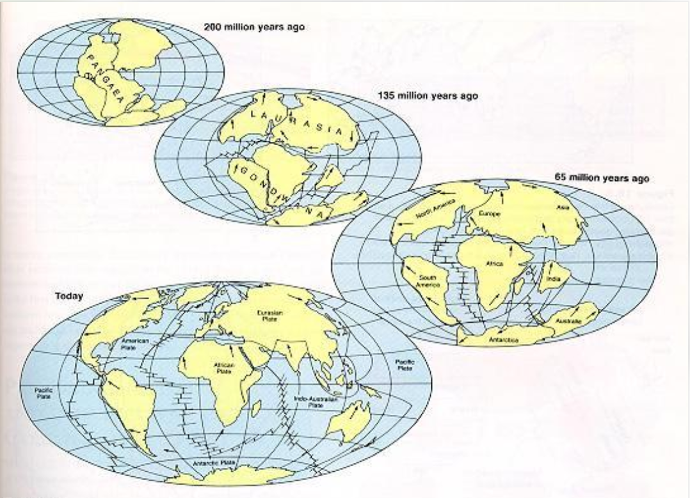

De los supercontinentes a los continentes actuales
La superficie terrestre no siempre tuvo la distribución que conocemos. A lo largo de miles de millones de años, los continentes se unieron, se fragmentaron y volvieron a reorganizarse, transformando la geografía del planeta.
Un planeta en constante transformación
La litosfera está dividida en placas tectónicas que se desplazan lentamente sobre el manto terrestre. A lo largo de millones de años, estos movimientos pueden reunir grandes masas continentales en un supercontinente o separarlas hasta formar nuevos océanos.
La historia de los supercontinentes permite reconstruir parte de la evolución de la Tierra, aunque las primeras configuraciones son difíciles de conocer con precisión porque gran parte de las rocas más antiguas han sido transformadas o destruidas.
Los principales supercontinentes
1. Vaalbará
Hace aproximadamente 3.600–2.700 millones de años
Vaalbará es el nombre propuesto para una posible de las primeras masas continentales de gran tamaño. Su existencia se plantea a partir de similitudes entre rocas muy antiguas de regiones que hoy están separadas, como partes de África y Australia.
Su configuración exacta y el grado en que llegó a formar un único supercontinente siguen siendo objeto de investigación.
2. Kenorland
Hace aproximadamente 2.700–2.400 millones de años
Kenorland habría reunido varios bloques continentales durante el Arcaico tardío. Su fragmentación ocurrió en una etapa de importantes transformaciones geológicas y ambientales, durante el tránsito hacia el eón Proterozoico.
Su reconstrucción ayuda a estudiar cómo crecieron y se reorganizaron los primeros continentes.
3. Columbia o Nuna
Hace aproximadamente 1.800–1.500 millones de años
Columbia, también conocido como Nuna, fue un supercontinente propuesto que reunió numerosos cratones, es decir, núcleos antiguos y relativamente estables de la corteza continental.
Su posterior fragmentación separó regiones que hoy forman parte de distintos continentes.
4. Rodinia
Se ensambló hace aproximadamente 1.100 millones de años
Rodinia reunió grandes masas continentales mucho antes de la aparición de Pangea. Su fragmentación, iniciada hace alrededor de 800–750 millones de años, contribuyó a reorganizar las masas continentales y las cuencas oceánicas.
La posición exacta de varios de sus bloques continentales continúa debatiéndose entre los especialistas.
5. Pannotia
Hace aproximadamente 600–540 millones de años
Pannotia es una configuración propuesta para las masas continentales cercanas al final del Neoproterozoico. Se ha planteado que pudo existir durante un periodo relativamente breve, pero su condición como supercontinente claramente definido continúa en debate.
Esta etapa precedió a la geografía continental del Paleozoico, cuando la vida marina se diversificó y los continentes siguieron desplazándose.
6. Pangea
Se ensambló hace aproximadamente 335–300 millones de años
Pangea fue uno de los supercontinentes más recientes y mejor conocidos. Durante parte de la era Mesozoica, reunió casi todas las grandes masas continentales en una enorme extensión rodeada por un vasto océano, Panthalassa.
En su interior se desarrollaron grandes regiones alejadas de la influencia directa del mar. Con el tiempo, las fuerzas tectónicas comenzaron a fracturar esta masa continental.
La fragmentación de Pangea
Hace alrededor de 200 millones de años, Pangea comenzó a separarse. La apertura de nuevas cuencas oceánicas dividió las masas continentales en bloques que continuaron desplazándose.
Laurasia y Gondwana
Durante la fragmentación de Pangea se desarrollaron dos grandes conjuntos continentales: Laurasia, al norte, y Gondwana, al sur. Entre sus fragmentos se fueron abriendo nuevos espacios oceánicos.
La apertura del océano Atlántico
A medida que las placas se separaron, comenzó a formarse el océano Atlántico. La expansión del fondo oceánico fue alejando América de Europa y África, mientras otros bloques continentales también cambiaban de posición.
India y la formación del Himalaya
India se desplazó hacia el norte hasta colisionar con Eurasia, un proceso que comenzó hace decenas de millones de años y que continúa teniendo consecuencias geológicas. Esta convergencia dio origen al levantamiento del Himalaya y de la meseta tibetana.
Los continentes no están inmóviles. Las placas tectónicas siguen desplazándose, los océanos evolucionan y las colisiones continentales pueden levantar cordilleras. La distribución actual de las tierras emergidas es una etapa más de una historia geológica que sigue desarrollándose.
¿Volverá a formarse otro supercontinente?
Los modelos geológicos plantean que, en cientos de millones de años, los movimientos tectónicos podrían volver a reunir una gran parte de los continentes. Se han propuesto distintos escenarios futuros, pero ninguno constituye una predicción definitiva.
El resultado dependerá de cómo evolucionen las zonas de subducción, la apertura y el cierre de los océanos y el movimiento de las placas.
La geografía también tiene una historia
Los continentes actuales son el resultado de una larga sucesión de uniones, fracturas, colisiones y desplazamientos. Estudiar los supercontinentes permite comprender que los mapas del mundo representan una configuración temporal de un planeta dinámico.